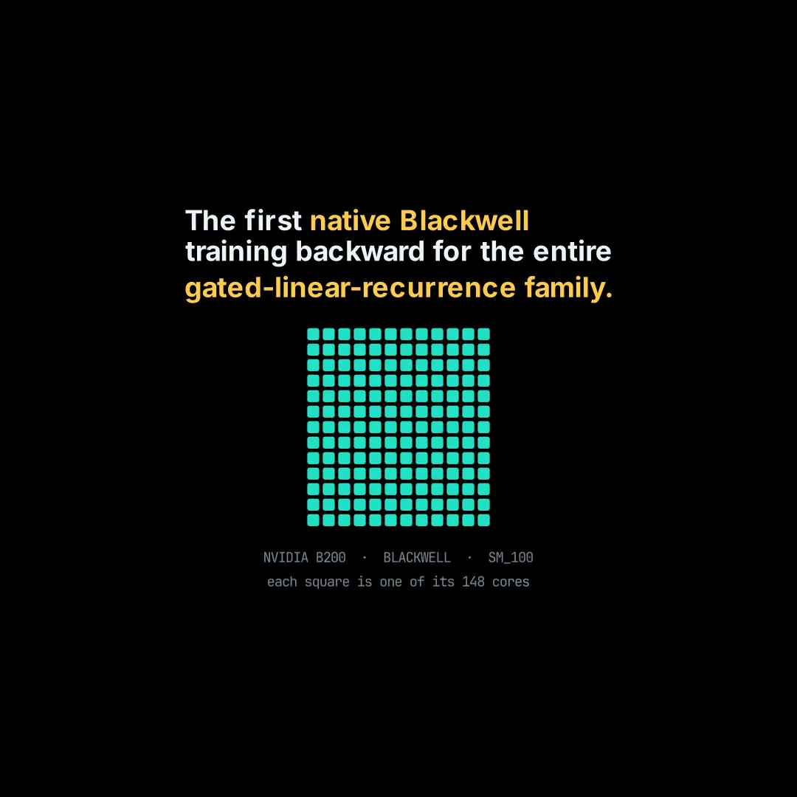
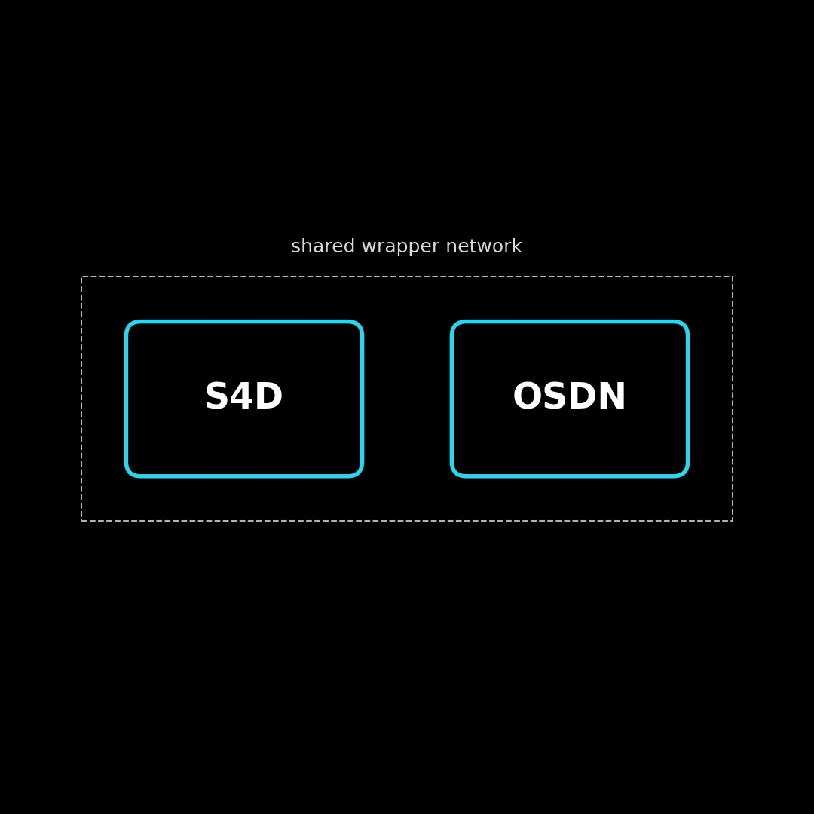
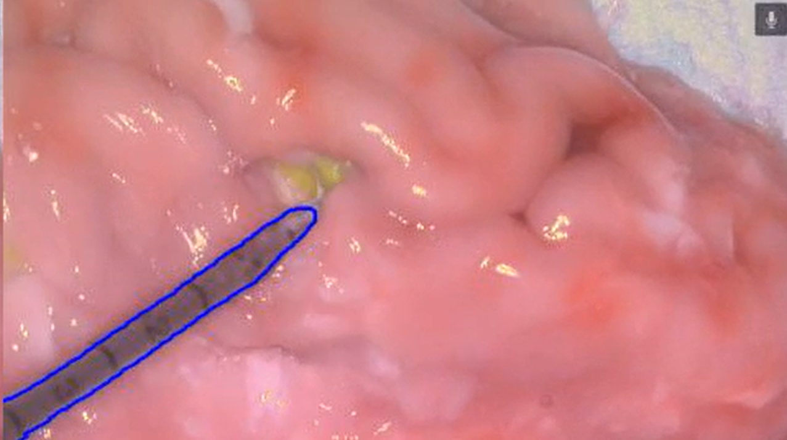
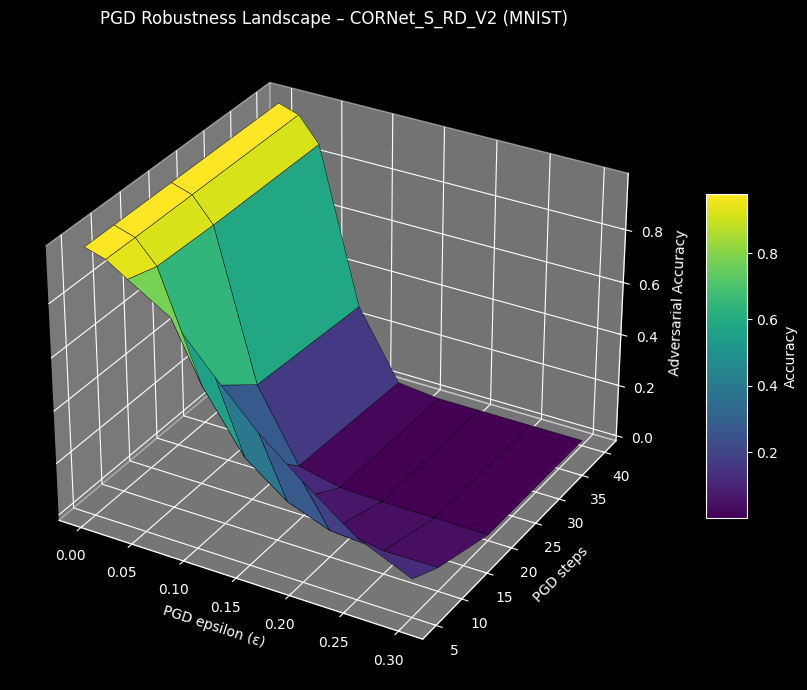
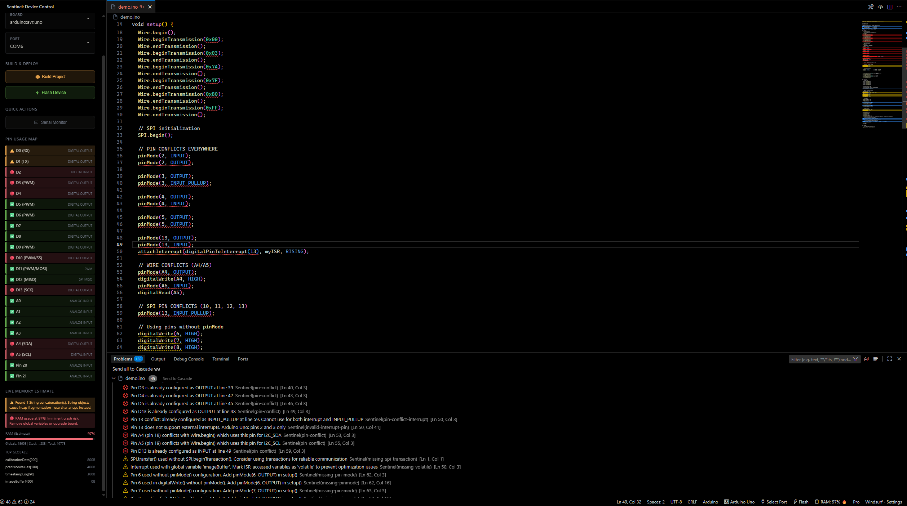
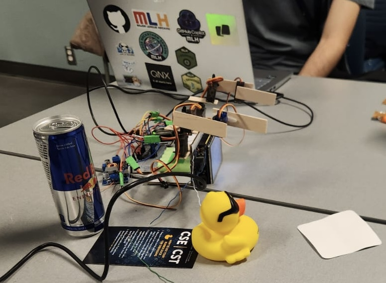
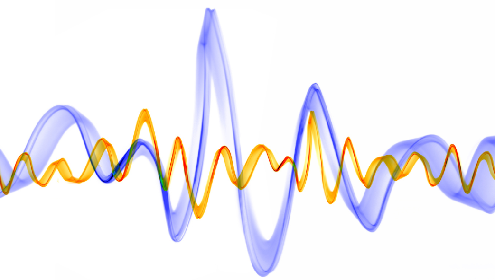
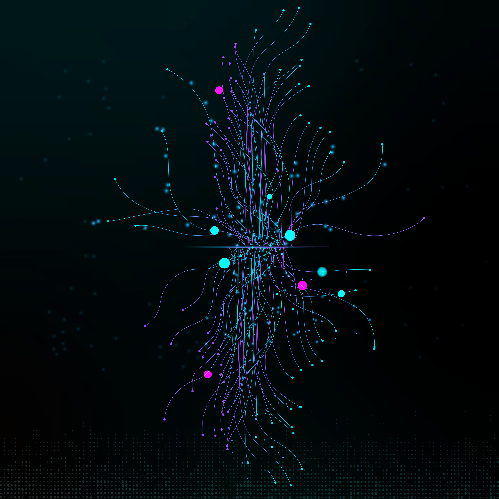
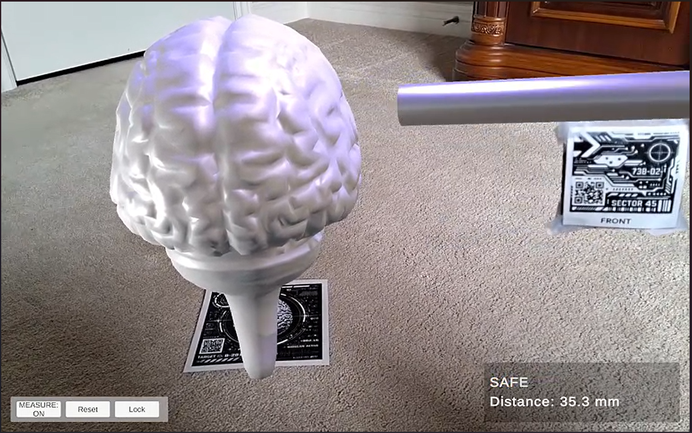
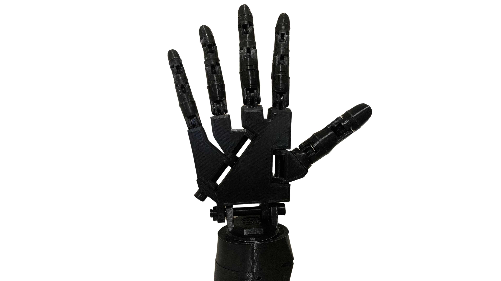

First hand-written native Blackwell (tcgen05) training backward for the gated-linear-recurrence family (Mamba-2, GLA, KDA, Gated DeltaNet), verified against an fp64 oracle and bit-for-bit deterministic. Includes a 12-gate contract verifier that audited 2,638 LLM-generated kernels a public system had accepted and falsified 62.1% of them, plus the first open Triton Mamba-3 MIMO backward.

Linear-attention architecture (S4D + OSDN) reimplemented from scratch in ~5,500 lines of pure C++17: autograd engine, optimizer, multi-threaded trainer, embedded FP32 kernel, and a triple-redundant correctness proof. Trained on real clinical data; runs on a $4 ESP32-S3 in 20% of its RAM to predict hypoglycemia 60 minutes ahead.

Partnered with Synaptive Medical and Robarts Research Institute to build surgical-vision AI system achieving 95% tool-segmentation accuracy for real-time guidance. Bronze Medal at Canada-Wide Science Fair for fluorescence-guided surgery support with <0.12s per image processing.

Engineered a bio-inspired recurrent vision model achieving 97.82% adversarial robustness, outperforming MIT's CORNet-S across MNIST, CIFAR, and ImageNet100. Integrated learnable prefiltering, gated recurrence, and denoise-scaling without requiring any adversarial training.

First hardware-aware static analyzer for embedded systems performing RAM/Flash estimation, pin-mapping, and 50+ validations before compilation. Built a custom Language Server Protocol integration with VS Code for real-time hardware-intelligent error detection. Won Best Developer Tool at Hack Western 12; 1K+ installs across the VS Code Marketplace and Open VSX.
Meta Quest 2 native Unity app for progressive muscle disease rehab. World Labs Gaussian-splat environment loaded as the world, hand-tracked butterfly catching via OVRSkeleton wrist bones, configurable spawn count and motion zone, overextension guardrail, and a singleton-driven score counter + session timer.

Built a dual-system robot using Cohere LLMs and real-time search that learns new skills instantly from natural language without pre-training. Placed Top 32 out of 256 projects at Hack the North with 2 custom 3-DOF robotic arms executing smooth motions from messy instructions.

Keyboard-activated AI assistant with dual interface combining instant popup access and powerful dashboard for seamless workflow integration. Leverages Groq's Llama 3.1 8B for voice commands, intelligent memory, and controls Spotify, weather, news, calendar, and project tracking.

Medical AI platform combining DenseNet121 classification trained on 19,000+ DermNet images with RAG-powered chatbot for comprehensive triage. Provides instant dermatological assessment and personalized health guidance through dual AI architecture.

Augmented reality application for surgical tool visualization and training. Interactive AR experience for medical education and surgical workflow enhancement.

Computer vision-controlled robotic arm responding to hand gestures in real-time using MediaPipe and Arduino. Demonstrates natural human-robot interaction with 6-DOF movement mapped from gesture recognition.
Twelve adversarial gates that check GPU-kernel correctness properly, several of them tolerance-free. Aimed outward, the verifier audited 2,638 LLM-generated kernels a public system had already accepted and found 62.1% carrying a contract violation; aimed inward, it certified the first native Blackwell (tcgen05) training backward for the gated-linear-recurrence family.
Owned the supervised layer and set the architecture direction of a longitudinal model that reads at-home fetal monitoring and returns a full posterior over days until delivery. The model predicts term delivery to within 3 days against 11 days for the clinical state of the art, and halves the obstetric calendar's error on preterm cases.
Cut battery voltage-model error 84% (12.82 mV to 2.03 mV RMSE) with a physics + LSTM hybrid, then carried it through ONNX to MATLAB and Simulink with machine-precision parity. Co-authoring a paper on agentic-AI-accelerated state-of-charge estimation built on a from-scratch EKF and SVSF.
Designed a biologically inspired recurrent vision model that reached 97.82% adversarial accuracy on MNIST without a single adversarial training example, outperforming MIT's CORNet-S by 12 points across MNIST, CIFAR-100, and ImageNet100.
Partnered with Synaptive Medical on surgical-vision AI: a U-Net at 95% DICE and sub-0.12 s per frame on live operating-room footage, plus a marker-based AR guidance prototype. Bronze Medal at the Canada-Wide Science Fair.
Copyright © 2026 Rishi Shah. All rights reserved.